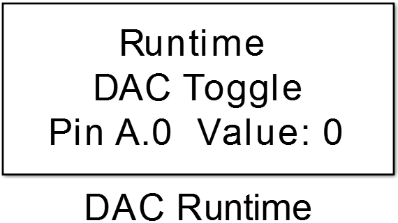
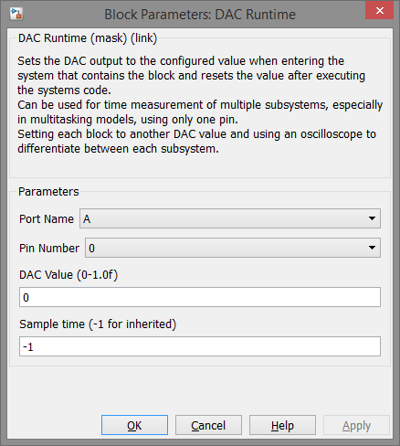

8.2. DAC Runtime
This block toggels the analog voltage of a DAC Pin for purpose of runtime measurements.
8.2.1. Library
utilities
8.2.2. Description
{kind=link}
This block can be used to measure the runtime of several subsystems of a model with only one controller pin or to determine the runtime of different tasks in a multitasking model. For this purpose the block uses the digital to analog converter peripheral of an MCU. The block uses only one DAC so if multiple blocks are used in a model they should all have the same pin configured, otherwise it is not determined which pin will be used. To measure the runtime of a subsystem it must contain the DAC Runtime block. To measure the runtime of two or more subsystems or tasks each system has to contain it’s own DAC Runtime block with different DAC Values configured. Each time code execution of a subsystem starts the actual DAC value is stored and the DAC is set to the new appropriate analog voltage. After finishing code execution the DAC value is restored.
Attention
Not all pins can be used for DAC output so check the documentation of the used MCU.
8.2.3. Data Type Support
This block has no input or output ports.
8.2.4. Parameters and Dialog Box
8.2.4.1. Port Name
Select the port name of the DAC pin to use.
8.2.4.2. Pin Number
Select the pin number of the DAC pin to use.
8.2.4.3. DAC Value
Value between 0 and 1 the DAC is set while the appropriate subsystem/task is active.
Note
If the system is idle and none of the models code is executed the DAC Value is 0. So don’t use 0 as the DAC Value for your code.